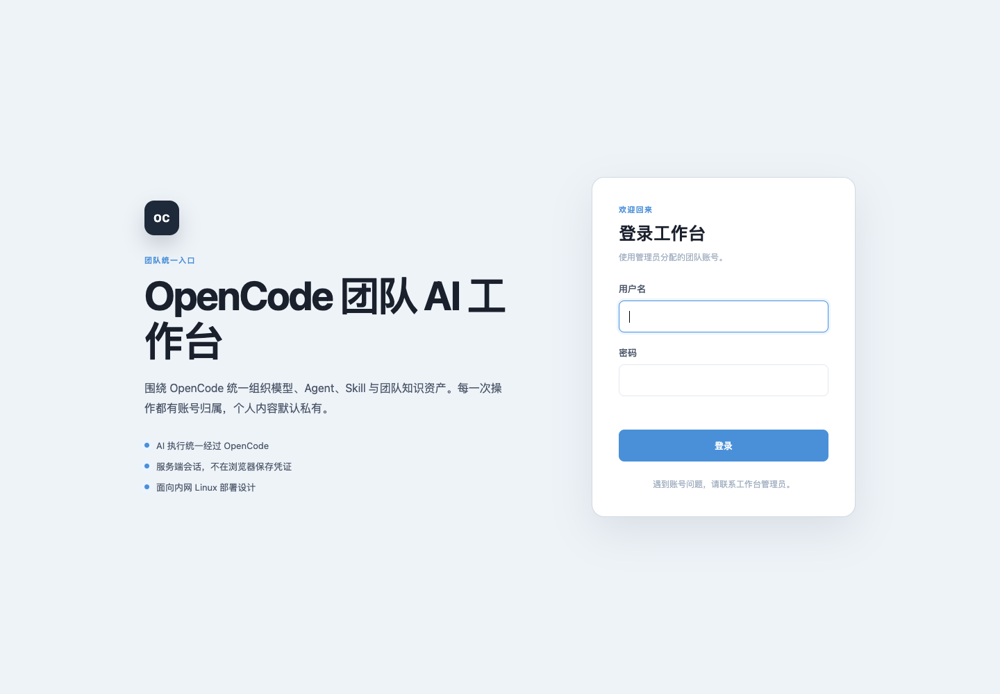
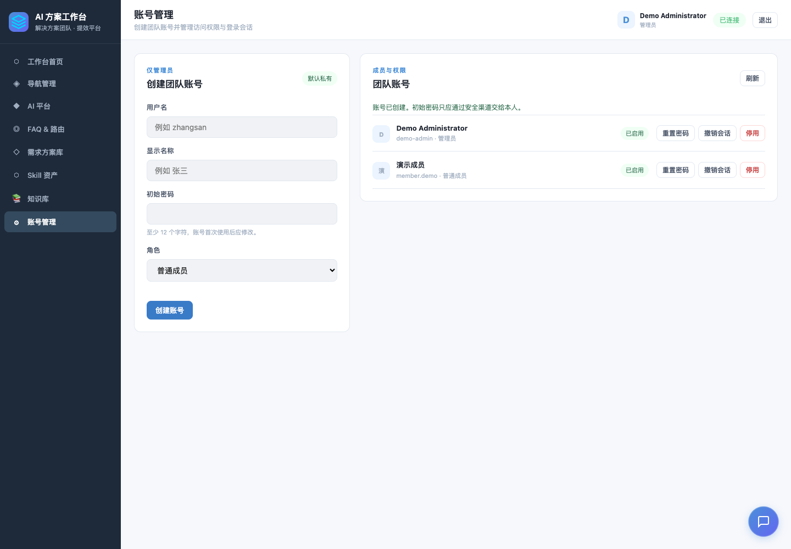
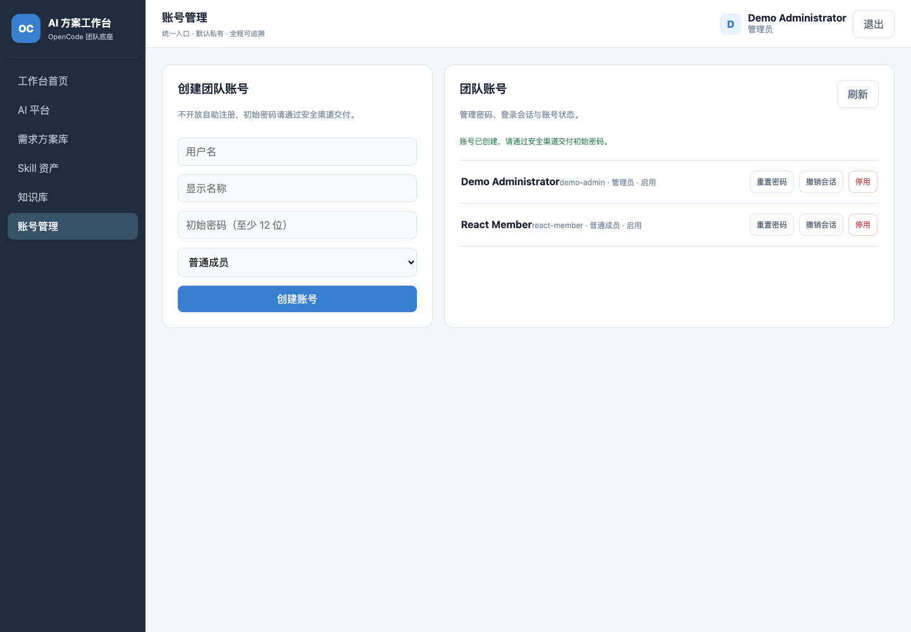
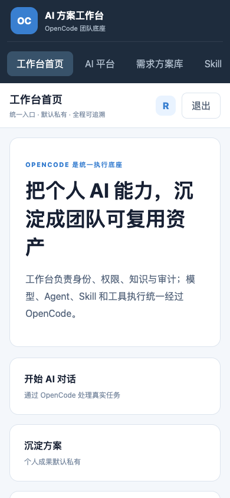

OPENCODE TEAM WORKBENCH · REVIEW SUMMARY
Stage 1 产品底座评审摘要
从持久账号与安全 Session，推进到 React 前后端、默认私有和可演示的浏览器闭环
TL;DR
Stage 1A–1C 已建立 SQLite、账号、权限、默认私有与审计边界；Stage 1D 补齐登录、退出、角色导航、管理员账号管理和服务端私有方案体验。Mac 桌面与手机浏览器闭环已经通过。所有 AI 执行仍只经过 OpenCode，仓库不保存 Provider 密钥；React/Vite、常驻 Gateway 与 Linux 生产验收仍待后续阶段。
01本次解决的问题
浏览器闭环
登录后再加载业务页面和 WebSocket，用户可安全退出，会话凭证不进入浏览器存储。
角色管理
管理员可建号、重置密码、启停和撤销会话；普通成员看不到管理入口。
私有沉淀
方案从浏览器本地存储迁移到服务端，继续使用账号归属与默认私有边界。
02交付面
| 层次 | 关键实现 | 状态 |
|---|---|---|
| 数据 | SQLite WAL、版本迁移、用户/Session/审计仓储、文件权限 0600 | 1A 完成 |
| 认证 | 登录、退出、当前用户、改密、过期/撤销验证 | 1B 完成 |
| 防护 | HttpOnly、SameSite、Secure 配置、CSRF 三方匹配、双维度限速、no-store | 1B 完成 |
| 管理 | 账号列表、建号、密码重置、启停、Session 强制撤销 | 1B 完成 |
| 业务权限 | REST/WS 强制认证、CSRF、角色矩阵、方案与知识所有者隔离 | 1C 完成 |
| 执行安全 | Socket 同源检查、Session 撤销重验证、用户身份和脱敏审计绑定 | 1C 完成 |
| 用户界面 | React/Vite、本地资源、登录/角色、账号管理、知识编辑上传、对话沉淀方案 | 1E 完成 |
03测试与审查
- 真实边界。使用临时 SQLite、真实 HTTP 监听、Cookie 与 CSRF 请求完成集成测试，不以 mock 代替认证链路。
- 错误一致。不存在的账号、错误密码和停用账号使用同一无泄漏错误；Session 失效返回稳定错误码。
- 审查修复。成功登录不再清空来源 IP 的失败累计，避免持有任意有效账号后绕过 IP 维度限速。
- 缓存边界。认证和管理员响应统一设置
Cache-Control: no-store。 - 权限回归。匿名、跨成员、异源 WebSocket 和撤销后继续执行均由真实 HTTP/WebSocket 用例覆盖。
- 文件边界。私人目录和文件强制
0700/0600，不依赖运行系统的默认umask。 - 前端安全。业务请求统一使用 CSRF 客户端，方案不再保存到
localStorage，动态内容进入 HTML 前完成转义。 - 浏览器验收。1440×1000 与 390×844 完成管理员/成员登录、退出、建号、角色隐藏、遮蔽密码输入与横向溢出检查。
- 验收结果。
npm test118/118，Vite 生产构建、JS 语法检查和零发现密钥扫描通过。 - 发布门禁。
npm test、npm run check、npm run security:scan和git diff --check在提交前重新执行。
04浏览器证据




05残余边界与下一步
NOT PRODUCTION READY
Stage 1 已完成 Mac 上的 React 多用户产品底座，但常驻 Gateway、真实内部模型、Linux HTTPS、备份恢复、监控和容量验收尚未完成，不能宣称生产就绪。
下一步 Stage 2：实现一个常驻 Gateway、2 个起步的 OpenCode Worker 池、多逻辑 Session、按用户公平排队和 SQLite 恢复，不按用户固定进程。